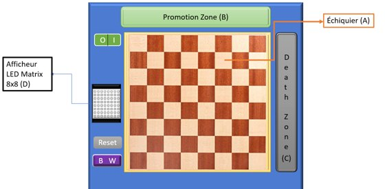
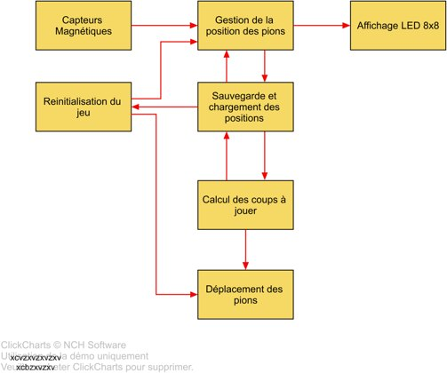
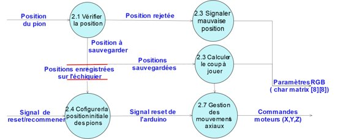
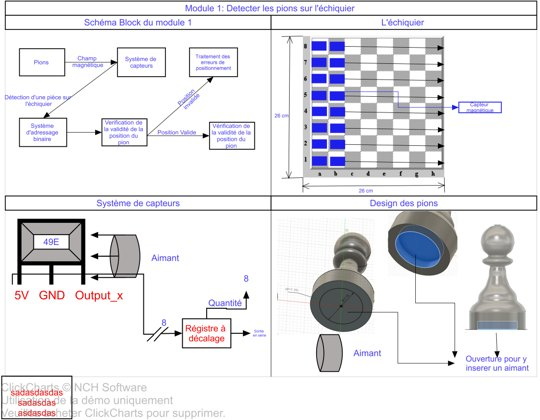

Mechatronics | Motion control
Mechanical chess board
An 8 x 8 sensing board, LED feedback and three-axis motion with an electromagnet.
- Status
- Design and subsystem tests
- Focus
- Embedded
- Tools and methods
- Arduino / Sensors / Mechatronics
Mechanical motion
- Axis X
- 0.0 mm
- Axis Y
- 0.0 mm
- Axis Z
- 0.0 mm
- Electromagnet
- Off
- From
- -
- To
- -
Sensors
32 / 64Captured pieces
White to move
Visual motion model: 26 mm square pitch, a 22 mm offset and a 64 mm Z stroke from the Wokwi sketch. Motion timing and capture clearance are illustrative; this is not a firmware emulator.

Objective
Develop a physical board capable of supporting a solo chess experience through sensing, game logic and mechanical movement.
Engineering work
- Specify occupied-square sensing with magnetic sensors.
- Break down sensing, display and motion into functional modules.
- Explore shift-register inputs and LED-matrix output.
- Prepare board layouts and mechanical models for the proposed mechanism.
Outcome
The original Wokwi sketch combines eight input registers for 64 sensors, LED-matrix updates, chess-engine calls and three-axis motor commands. The archived diagrams and mechanical files document the wider design.
Scope and limits
This animation is a visual positioning model, not an Arduino firmware emulator or a reproduction of the original Micro-Max engine. Hardware accuracy, collision clearance and full autonomous operation have not been independently validated here.
Engineering workflow
- 01Sense board
- 02Evaluate state
- 03Select action
- 04Drive outputs
Archive gallery 12 items














Documentation
Original Wokwi control sketch, functional specifications, board diagrams and archived Arduino input-register tests. The source sketch identifies the inherited chess engine separately from the sensor, display and motor-control work.